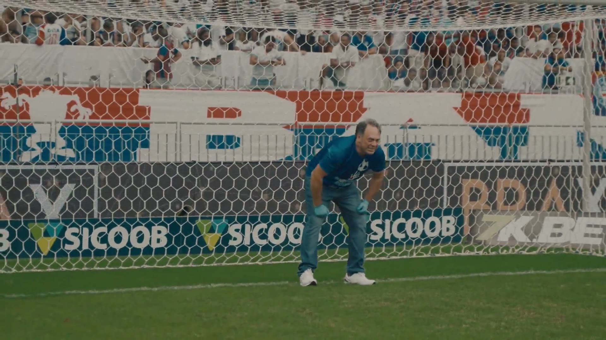
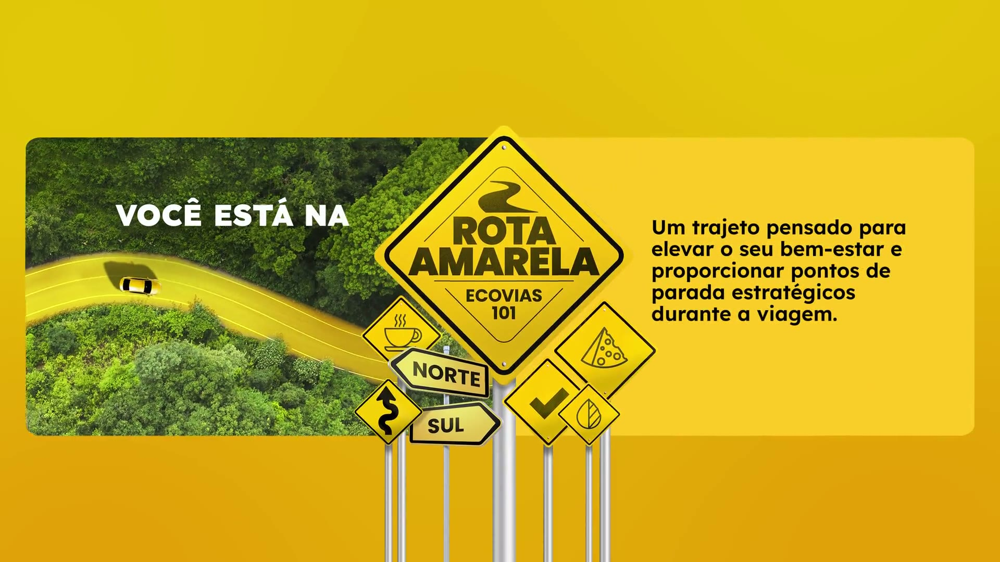
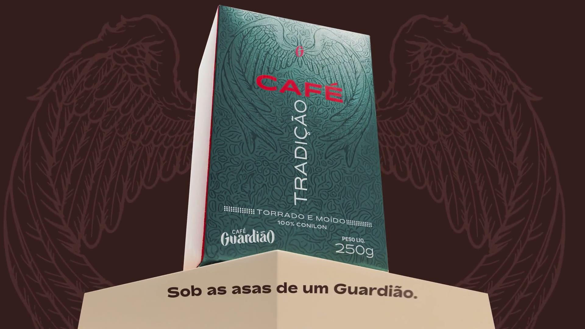

BRANDING
Estudo de caso:
Apresentar o grupo e o tema: um estudo de caso de branding sobre a TIPZ, agência de Vitória. Ir direto para o próximo slide.

02
Vitória · Espírito Santo
Vitória agência independente, com sede em Santa Helena
2011 marca na web desde 2011; empresa aberta em 2012
5 frentes Consultoria e estratégia Branding Propaganda Conteúdo Performance
MISSÃO
"Agregar valor para a marca e para o negócio do cliente e construir prosperidade para as pessoas que estão ao nosso lado."
Nossa leitura
A missão promete valor para o negócio , não só criatividade. É essa promessa que vamos testar no posicionamento e nos cases.
Site tipz.com.br (missão e unidades de negócio); Receita Federal (CNPJ); LinkedIn da TIPZ. Imagens: videocases inscritos no Festival Colibri.
(Os trabalhos da agência passam ao fundo e a logo aparece.) Esta é a TIPZ, agência independente de Vitória.
Para situar: sede em Vitória, marca desde 2011 e cinco frentes de serviço, da consultoria à performance. Ou seja, ela não vende só criação: vende estratégia e resultado.
A missão, do jeito que está no site. O que importa para a análise: ela promete valor para o negócio do cliente. É essa promessa que vamos testar nos próximos slides.
Ler o que a própria agência contou na visita sobre a equipe.
03 Do nascimento da marca ao cenário de hoje.
2011
A marca nasce como Tipz, Comunicação, Tecnologia e Marketing .
2020
Nova formação: passa a assinar Tipz+ .
Hoje
Boutique Creative Agency , 2ª agência do Colibri 2026 e premiada fora do país.
Receita Federal (CNPJ e quadro de sócios); site e LinkedIn da TIPZ; Tribuna Online (07/01/2021); Festival Colibri 2025 e 2026.
A trajetória em três momentos. Em 2011 a marca nasce ligada a comunicação, tecnologia e marketing.
Em 2020 vem a nova formação, com novos sócios, e a marca passa a assinar Tipz+.
Hoje ela se apresenta como boutique criativa, é a 2ª agência do Colibri 2026 e tem prêmios fora do país. Os motivos das mudanças ficam para a visita : não vamos supor.
Ler como a própria TIPZ conta a trajetória e as mudanças.
04 Como a TIPZ quer ser vista, como prova isso e o que o mercado enxerga.
O que comunica a promessa
boutique criativa independente estratégica B2B
Como demonstra as provas
ideias simples causa e design indústria do ES
Que percepção constrói o que o mercado vê
→ →
Site tipz.com.br; Instagram e LinkedIn da TIPZ; fichas e resultados do Festival Colibri 2025 e 2026; WINA; A' Design Award. Bedendo (2024), cap. 5.
Posicionamento em três partes: o que a TIPZ comunica, como demonstra e que percepção constrói. Posicionamento é o lugar que a marca ocupa na cabeça do público (Bedendo).
Comunica: boutique criativa, independente, estratégica e B2B ("Boutique Creative Agency" no site, "valor para o negócio" na missão, "especialistas em B2B" no LinkedIn). Demonstra: ideias simples, de causa e design, para a indústria do ES (Bahia, Ecovias, Cooabriel; rochas, café, química, logística), com os sócios na criação. Percepção: premiada, criativa, 2ª agência do Colibri; o lado estratégico aparece pouco. Síntese, falada: uma boutique criativa independente que transforma problemas de marcas, sobretudo capixabas, em ideias simples, memoráveis e premiadas. Coerente na criação, parcial no negócio.Ler como a TIPZ define o próprio posicionamento e quais diferenciais a equipe considera mais importantes.
05 Três trabalhos que materializam a proposta da agência. Clique em cada um.
Vídeo e análise ▶ Só o vídeo ✕ Fechar
a defesa
Na Ponta dos Dedos
E. C. Bahia · Novembro Azul 2025
Na Ponta dos Dedos
Grand Prix no Colibri 2026 · prata e bronze no WINA 2026
E. C. Bahia · Novembro Azul 2025
Na Ponta dos Dedos
Cliente e desafio Falar de exame de próstata com a torcida, no Novembro Azul.
Ideia A defesa com a ponta dos dedos vira o gesto do exame. No intervalo, o urologista Dr. Roberto Rossi vai para o gol com luvas cirúrgicas.
Com o posicionamento Ideia de causa feita ao vivo, no estádio. Conversa com o "Inquietos. Presentes." que abre o site.
Reconhecimento Colibri 2026: Grand Prix, 2 ouros e 1 prata. WINA 2026: prata e bronze.

a viagem
Rota Amarela
Ecovias Capixaba · Maio Amarelo 2025
Rota Amarela
ouro, prata e bronze no Colibri 2026
Ecovias Capixaba · Maio Amarelo 2025
Rota Amarela
Cliente e desafio Renovar a mensagem do Maio Amarelo, campanha de segurança no trânsito que se repete todo ano.
Ideia A BR-101 vira um roteiro de viagem tranquila, com pontos de parada e o vídeo da creator Lara Santana.
Com o posicionamento Uma marca de infraestrutura falando com o motorista em tom de viagem, e não de alerta.
Reconhecimento Colibri 2026: ouro, prata e bronze. Vídeo da Lara: 613 mil visualizações no YouTube.

as asas
Café Guardião
Cooabriel · 2024 e 2025
Café Guardião
ouro e prata no Colibri 2025 · bronze e iron no A' Design 2026
Cooabriel · 2024 e 2025
Café Guardião
Cliente e desafio Destacar o café conilon de uma cooperativa capixaba numa gôndola dominada por marcas grandes.
Ideia "Um café feito por pessoas": o arcanjo São Gabriel e as asas viram a embalagem.
Com o posicionamento Branding e embalagem, uma das cinco frentes da agência, chegando a um prêmio internacional de design.
Reconhecimento Colibri 2025: ouro e prata. A' Design 2026: bronze e iron.
Nos três, o problema do cliente vira um gesto simples, fácil de lembrar .
Os cases são a prova do posicionamento. Clique num card: o vídeo abre ao lado da análise, sem nada por cima. "Só o vídeo" amplia o vídeo; "Fechar" volta aos três.
Na Ponta dos Dedos , para o Bahia. A defesa com a ponta dos dedos vira o gesto do exame de próstata, e no intervalo o urologista vai para o gol de luva cirúrgica. Grand Prix no Colibri, prata e bronze no WINA.Rota Amarela , para a Ecovias. Em vez do discurso de sempre sobre trânsito, a BR-101 vira roteiro de viagem tranquila, com a Lara Santana. Ouro, prata e bronze no Colibri.Café Guardião , para a Cooabriel. Numa gôndola dominada por marcas grandes, a embalagem diz "café feito por pessoas", com o arcanjo e as asas. Prêmio internacional de design.O que os três têm em comum: o problema vira um gesto . A defesa, a viagem, as asas. Isso sustenta o lado criativo do posicionamento.
Ler como a TIPZ diz que desenvolve o branding dos clientes.
06 O que a TIPZ conquistou em 2025 e 2026, em números.
18 prêmios em 2025 e 2026 Colibri 14 · WINA 2 · A' Design 2
2º lugar entre as agências no Colibri 2026 122 pontos
9º → 2º no Colibri, em um ano de 32 para 122 pontos
E a vitrine de prêmios do site?
O site mostra 19 selos e fala em "mais de 50 reconhecimentos nacionais e internacionais".
Conferimos cada selo na fonte oficial: 3 são da TIPZ; 7 vêm de trabalhos da equipe em outras empresas, antes da agência.
Da TIPZ, 2025 e 2026 3
Colibri WINA A' Design (2 de 3)
Trabalhos anteriores da equipe, em outras empresas 7
Cannes Lions Cannes ACT El Ojo Lürzer's Archive Paris Design IDA Lusófonos
Publicação, não prêmio 1
Clube de Criação
Não confirmados ou não verificáveis 8
FePI LEAG Bornancini Renato Castelo Branco Favourite Davey Communicator W3
Sites oficiais de cada prêmio; Meio & Mensagem (2017); Consumidor Moderno (2018); Behance e Nosso Meio (Montenegro Design, 2024).
Festival Colibri, resultados 2025 e 2026 (troféus de agência); WINA, vencedores 2026; A' Design Award, IDs 181277 e 181276.
Em números: 18 prêmios em 2025 e 2026 (14 no Colibri, 2 no WINA, 2 no A' Design), 2º lugar entre as agências no Colibri 2026 e um salto de 9º para 2º em um ano. Credibilidade julgada por terceiros. Não atribuímos o salto a uma estratégia : é pergunta da visita.
E o site? Ele mostra uma vitrine de 19 selos e fala em mais de 50 reconhecimentos.
Conferimos um por um (os selos viram e vão para a pilha do que encontramos). 3 são da TIPZ; 7 vêm de trabalhos que a equipe fez antes, em outras empresas. Dizer com respeito: é comum no mercado; voltamos a isso no diagnóstico.
Ler o que a TIPZ disse sobre o que mudou para chegar ao 2º lugar.
07
A TIPZ COMO PESSOA E se a TIPZ fosse uma pessoa?
Conheça a Triz 39 anos · CEO e diretora executiva fictícia
01 · Personalidade
Criativa. Estratégica. Independente. Inquieta. 02 · Visual
Elegante. Contemporânea. Corporativa. Autoral.
03 · Comunicação Inteligente.
Ela pensa como estrategista. Cria como artista. Beatriz, a Triz · a TIPZ como pessoa
a seguir: a identidade visual →
Beatriz · Triz
Persona e imagem criadas pelo grupo a partir da pesquisa sobre a marca.
(Tela preta, a pergunta entra.) E se a TIPZ fosse uma pessoa? Para traduzir a marca de um jeito mais próximo, criamos uma persona.
(O pingo magenta da TIPZ abre a cena.) Esta é a Beatriz, a Triz : 39 anos, CEO e diretora executiva fictícia. Madura, com repertório e prêmios, mas sem perder a personalidade autoral. Fugimos de uma figura jovem demais, que não combinaria com a credibilidade da marca.
Personalidade: criativa, estratégica, independente e inquieta. É o "Independentes. Inquietos. Presentes." do site em forma de gente.Visual: elegante, contemporânea, corporativa e autoral. O cabelo rosa vem do magenta da marca; o blazer preto, da postura corporativa.Comunicação: inteligente, direta, persuasiva e segura. Fala de forma criativa sem perder a postura de quem lidera o negócio, e mostra resultados, prêmios e método.Em uma frase: ela pensa como estrategista e cria como artista. E a identidade visual, que vem a seguir, é a roupa que a Beatriz veste.
08 Logo, cores, tipografia e site: a marca que sustenta o discurso, os cases e os prêmios.
Logo Cores
Preto #080808
Off-white #F0EDE6
Magenta #E8007D
Tipografia
Playfair Display itálico frases
JETBRAINS MONO rótulos
Inter texto
O que a identidade transmite
Personalidade Autoral · editorial · segura de si
Sensação Exclusividade · foco · um só ponto de cor
Com o posicionamento Forte em "boutique criativa" e "inquietos"
Role dentro da janela para explorar o site.
Site tipz.com.br (código e captura de 05/11/2026); prints do site de 03/11/2026; logo oficial da agência.
E a identidade visual reforça tudo isso, como a roupa da Beatriz: logo com o pingo do "i" em magenta, três cores e três fontes. Rolar o site na janela da direita : a constelação que nasce do pingo, os cases e a parede de prêmios.
O que ela transmite: personalidade autoral e editorial (a serifa pesada com itálico magenta), sensação de exclusividade (fundo preto e um só ponto de cor). Conversa muito bem com "boutique criativa"; fala menos com "estratégica" e "B2B".
09 O que sustenta a marca e o que merece atenção, sempre com a evidência.
Reputação criativa comprovada
Identidade própria e reconhecível
Carteira de peso no Espírito Santo
Sócios dentro do trabalho
Muitos nomes para a mesma agência
Vitrine de prêmios misturada
Método citado, mas não explicado
Site e canais desatualizados
Festival Colibri 2026 (fichas e resultados); WINA; A' Design Award; site, Instagram (84 posts), LinkedIn, YouTube e Google da TIPZ, lidos em 03/11/2026.
Forças, todas comprovadas. Reputação: 2º lugar no Colibri 2026, 10 troféus em cinco trabalhos, mais WINA e A' Design. Identidade: o pingo magenta e a mesma linguagem no site, no Instagram e no LinkedIn. Carteira: Cooabriel, Ecovias, Centrorochas, Grupo Águia Branca. Sócios: o diretor de criação está nas 25 inscrições do Colibri 2026.Pontos de atenção. Sete descritores entre site, Instagram, LinkedIn e Google. Dos 19 selos da vitrine, 3 são da TIPZ. O site cita o "Método Tipz" e uma consultoria mensal, mas não mostra as etapas; nas redes, 1 post educativo em 84. Cases premiados fora do site e links para canais antigos. Em resumo: a força está no trabalho; a fragilidade, em como a agência se apresenta.
10 O que recomendamos, como se a TIPZ fosse nossa cliente.
01 Uma assinatura só
02 Mostrar o método
03 Cases com resultado
04 Vitrine com fonte
Site, Instagram, LinkedIn e Google da TIPZ; Festival Colibri 2026; WINA, vencedores 2026 (lista global e por região). Rocha e Oliveira (2017); Bedendo (2024).
Uma assinatura só. Hoje cada canal diz uma coisa (boutique criativa, strategic and creative, especialistas em B2B). Posicionamento se fixa pela repetição (Rocha e Oliveira): escolher uma frase que una criação e negócio e usar em todos os canais.Mostrar o método. O "Método Tipz" é citado no site, mas não explicado. Cliente B2B compra confiança no processo antes do prêmio: explicar as etapas no site e em conteúdo.Cases com resultado. Rota Amarela, Antigreenwashing e Smile, premiados em 2026, não estão no site. Prêmio prova criatividade; resultado prova a missão: levar os cases com um indicador validado pelo cliente.Vitrine com fonte. Separar "prêmios da TIPZ" de "trajetória da equipe" e indicar a fonte de cada selo. Credibilidade é critério de posicionamento (Bedendo).
11 O que o estudo da TIPZ mostra sobre branding.
Identidade Própria e bem aplicada: é a parte mais consistente da marca.
Reputação Comprovada por júris independentes: os cases de 2026 levaram a TIPZ ao 2º lugar no ES e a prêmios fora do país.
Posicionamento Pede síntese: uma assinatura, método visível e cases com resultado aproximam o que ela diz do que ela entrega.
o que ela diz
o que ela prova
o que o mercado percebe
Uma marca é escolhida quando as três coisas apontam para o mesmo lugar.
Obrigado. Emmanuel Machado · Júlia Valadares · Izaias Johan
Veja a apresentação completajuvaladares14-coder.github.io/estudo-tipz
Conclusão estratégica em três frases. Identidade: forte e bem aplicada. Reputação: comprovada por júris independentes. Posicionamento: pede síntese, e as oportunidades mostram como.
Voltar à pergunta do slide 4: o que ela diz, o que ela prova e o que o mercado percebe.
(As esferas se juntam no pingo magenta.) Uma marca é escolhida quando as três coisas apontam para o mesmo lugar. Agradecer e abrir para perguntas.
Referências
Empresa Receita Federal via BrasilAPI e CNPJ.ws (CNPJ 16.876.571/0001-24)
Site tipz.com.br: textos, código e captura de 05/11/2026
Instagram @tipz.com.br; LinkedIn; YouTube @tipzcomunicacao; Google Maps
Imprensa A Gazeta: WINA (30/06/2026); seis anos da nova fase (06/10/2026)
Tribuna Online: WINA (27/07/2026); Archive (07/01/2021)
Folha Vitória (2026)
Clube de Criação, acervo (28/11/2025)
Prêmios Festival Colibri: resultados 2025 e 2026; fichas 736, 814 e 651 e videocases
WINA: vencedores 2026
A' Design Award: IDs 181277, 181276 e 117271
Meio & Mensagem (Cannes 2017); Consumidor Moderno (2018); Nosso Meio (Lusófonos, 2024)
Cases Post do E. C. Bahia no Instagram (25/11/2025)
ESPN: Bahia x Vasco, 23/11/2025
YouTube de Lara Santana, Rota Amarela
Mercado Grandes Nomes da Propaganda (30/09/2026); 24h Notícias (25/09/2026)
Sites da MP, Prósper, Ampla; ES Hoje (Conteúdo, 2026); Stone World (Marmomac 2025)
Livros da disciplina Bedendo (2024). Branding: como fazer na prática, cap. 5
Rocha e Oliveira (2017), cap. 2
Melo et al. (SAGAH, 2018), cap. Branding
Perez; Consolo
Pesquisa feita entre 03 e 05/11/2026.
Veja a apresentação completajuvaladares14-coder.github.io/estudo-tipz
Trabalho acadêmico, sem vínculo com a agência.
Deixar na tela durante as perguntas. Quem quiser ver a apresentação completa pode ler o QR code.
Índice · clique para ir ao slide